AI를 읽는 힘, 인간을 생각하는 시간더 잘 해내면서 더 깊이 배우는 AI 리터러시
요약과 초안에서 출발해 질문·지식·수업·평가·시간·위임·관계를 연결합니다. AI의 도움을 받은 뒤에도 스스로 확인하고 설명할 수 있는 배움의 과정을 살펴봅니다.
장별 슬라이드를 크게 보고, 강연 교안 PDF를 내려받을 수 있습니다.
CONTENTS
여덟 장에서 학습의 판단을 이어갑니다
장을 선택하면 해당 슬라이드만 모아 볼 수 있습니다.
들어가며
독서모임의 장면에서 출발하여 결과를 받는 일과 함께 배우는 활동의 목적을 구체화합니다.
슬라이드 3장 · 1–3 → 1장 · AI 문해력1장 · AI 문해력
교육의 목적, 사람의 설계 역할, 추천과 기본 설정에 담긴 선택 조건을 구분합니다.
슬라이드 5장 · 4–8 → 2장 · 읽기와 쓰기2장 · 읽기와 쓰기
관찰과 해석을 나누고 질문을 정교화하며 원자료와 문장을 대조합니다.
슬라이드 6장 · 9–14 → 3장 · 학습과학3장 · 학습과학
Tricot·Sweller 논문의 논증과 전문성 연구를 통해 지식·지원·전이의 관계를 설명합니다.
슬라이드 11장 · 15–25 → 4장 · 수업 설계4장 · 수업 설계
분수와 계절 수업의 시간 배치, 학생 설명의 관찰, 관찰에 따른 수업 수정을 연결합니다.
슬라이드 6장 · 26–31 → 5장 · 평가와 피드백5장 · 평가와 피드백
질문·답안·근거를 읽는 평가 기준과 다음 학습을 만드는 피드백을 설계합니다.
슬라이드 7장 · 32–38 → 6장 · 생산성과 학습6장 · 생산성과 학습
효율을 높이는 작업과 전문성이 자라는 경험을 구별하여 시간과 기회를 배분합니다.
슬라이드 4장 · 39–42 → 7장 · 위임과 판단7장 · 위임과 판단
목적과 중간 결과, 실행 범위를 정하여 여러 단계의 도움을 학습 과정에 배치합니다.
슬라이드 4장 · 43–46 → 8장 · 일상과 관계8장 · 일상과 관계
구체적인 일상 과제에서 도움을 받을 활동과 사람 사이의 학습 경험을 구성합니다.
슬라이드 5장 · 47–51 → 마치며마치며
강의의 처음 질문을 다음 생활 속 실천으로 연결합니다.
슬라이드 2장 · 52–53 →53쪽 강연 슬라이드
화면을 누르면 확대됩니다. 좌우 화살표 키 또는 화면을 좌우로 밀어 넘기고, Esc 키로 닫을 수 있습니다.
교육 자료와 논문 원문에서 질문·방법·적용 범위를 이어 읽습니다.
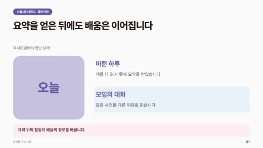
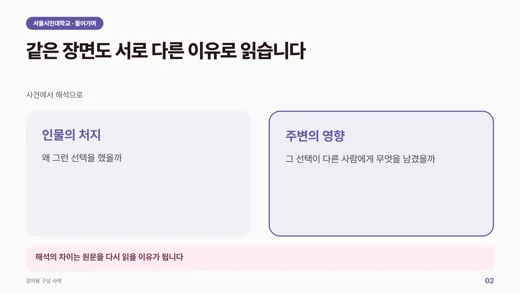
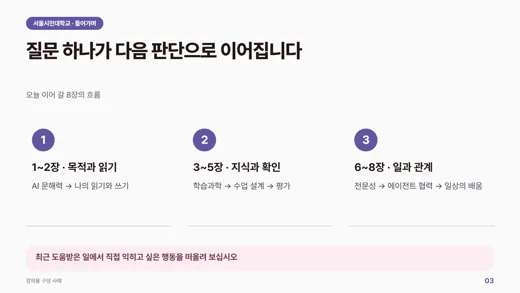
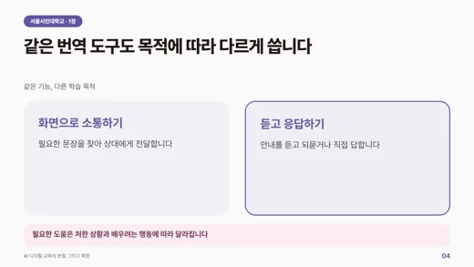
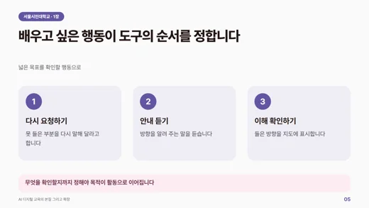
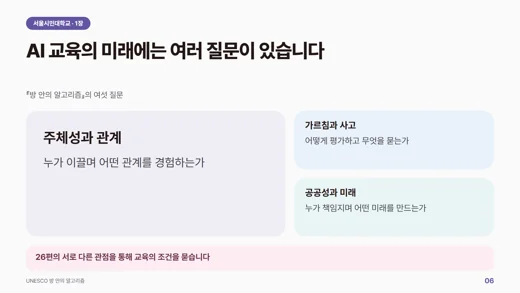
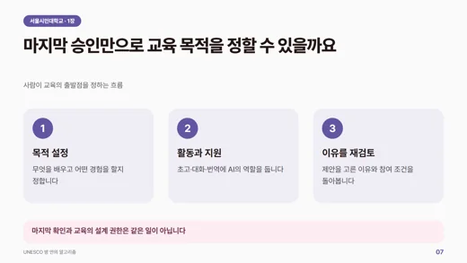
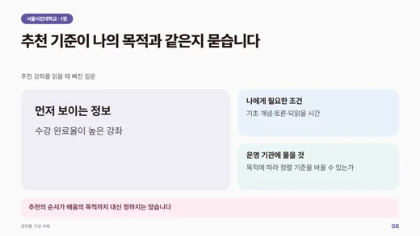
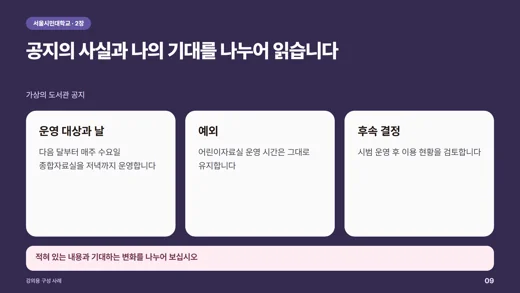
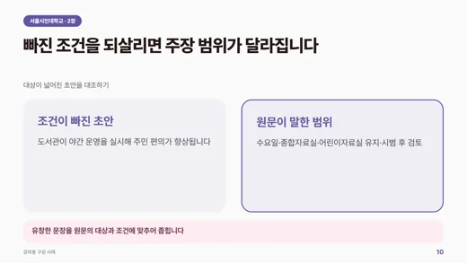
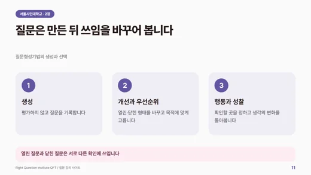
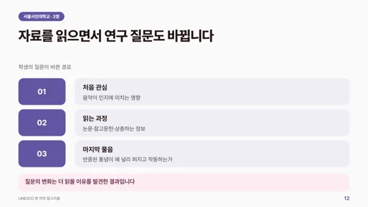
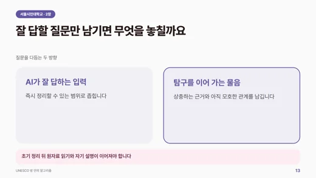
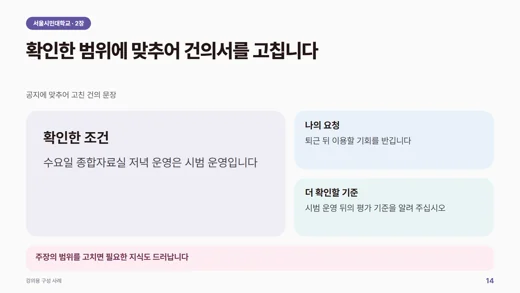
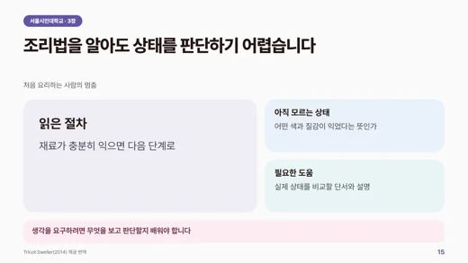
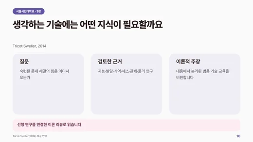
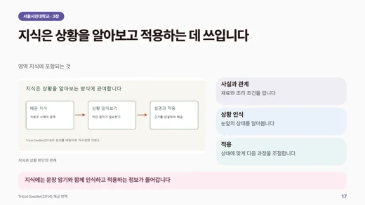
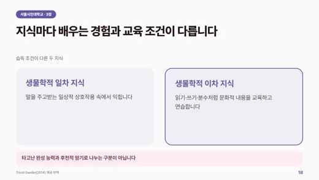
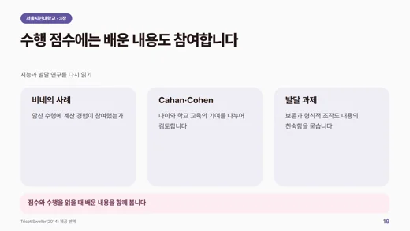
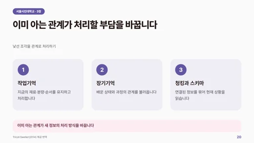
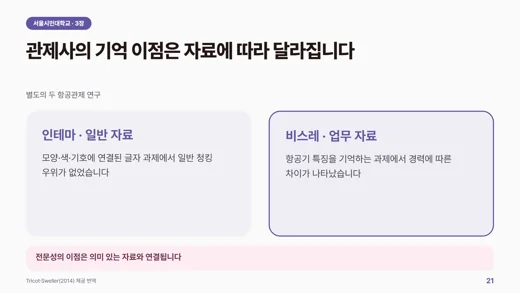
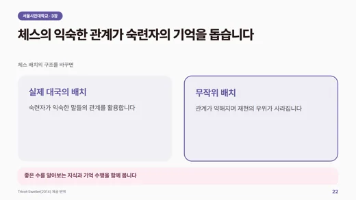
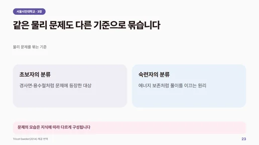
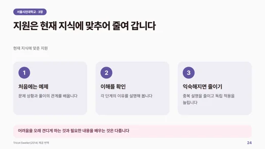
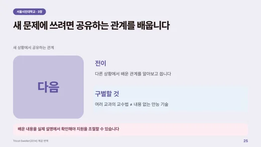
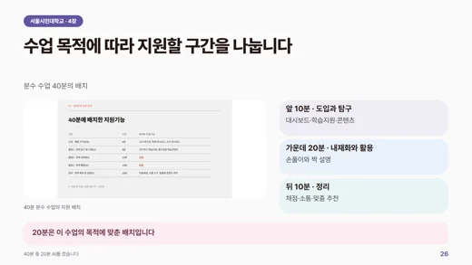
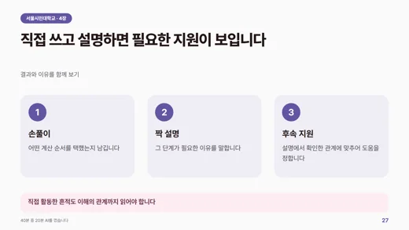
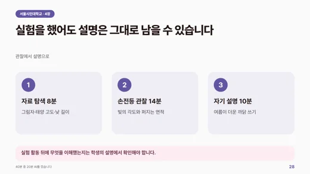
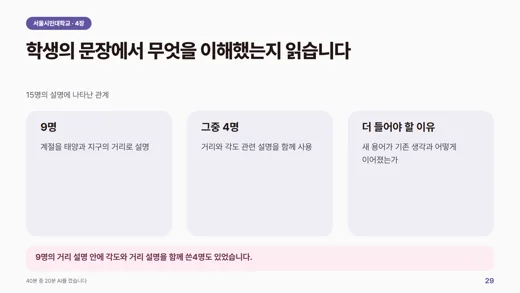
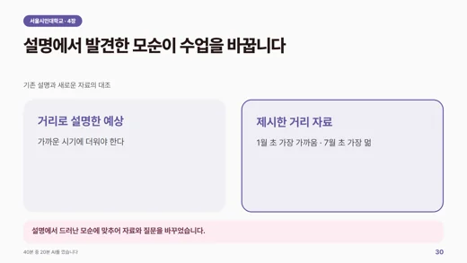
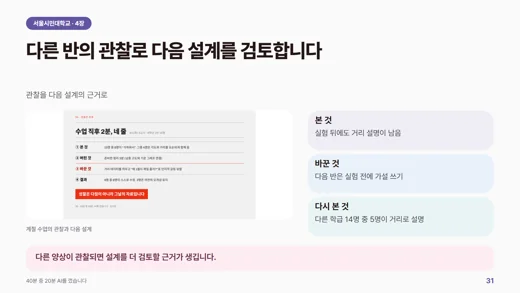
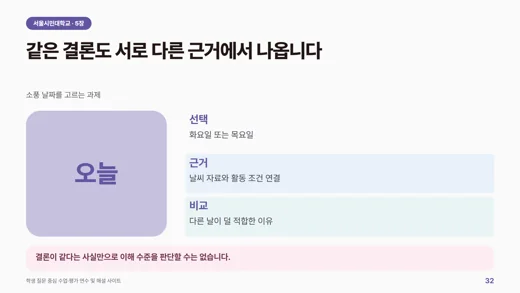
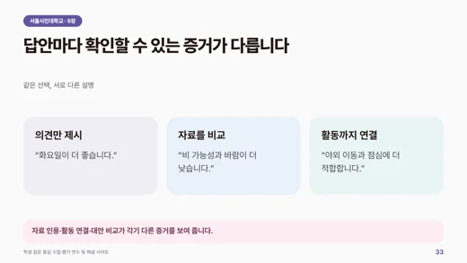
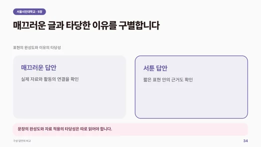
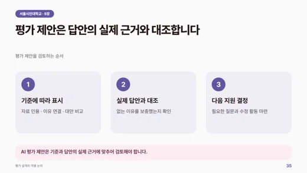
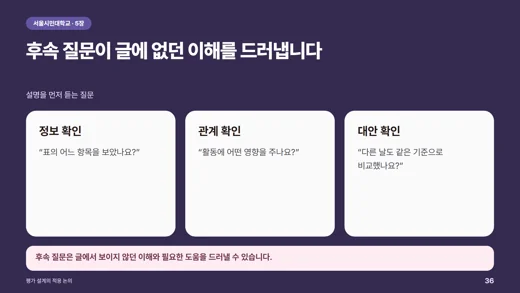
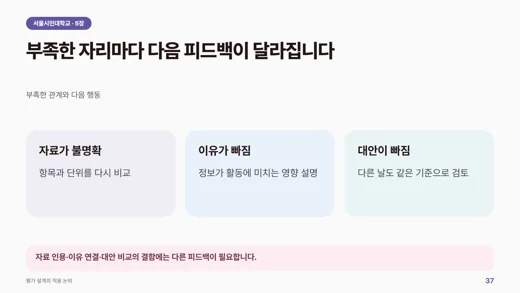
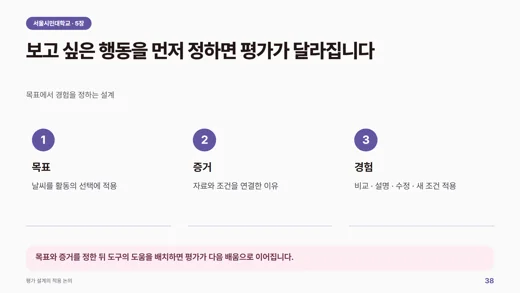
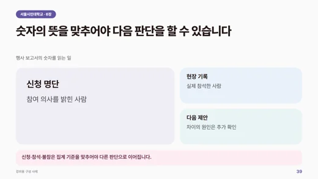
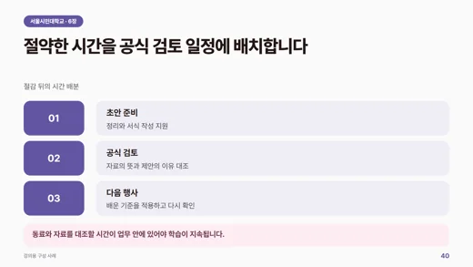
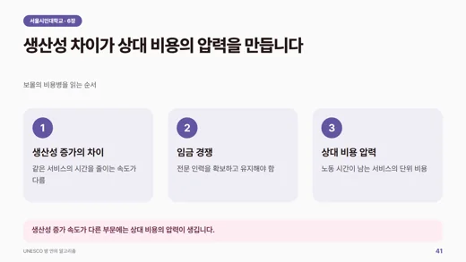
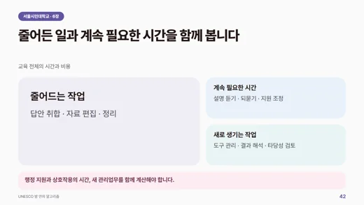
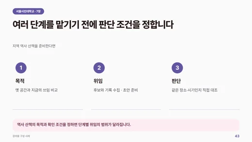
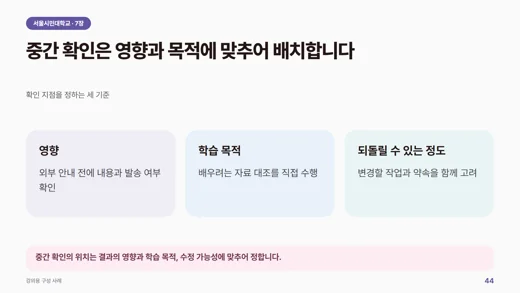
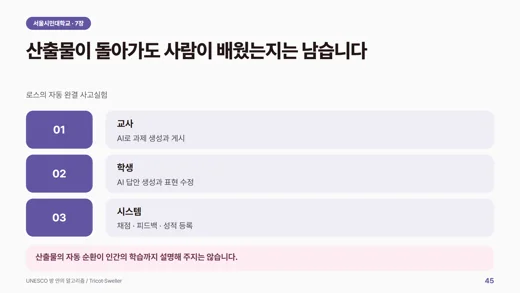
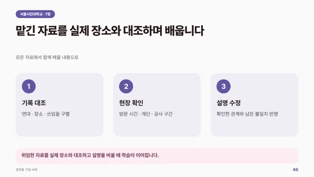
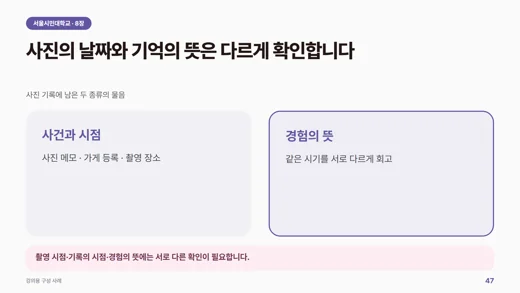
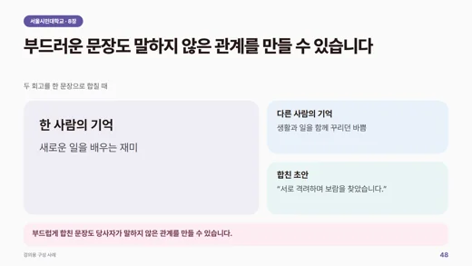
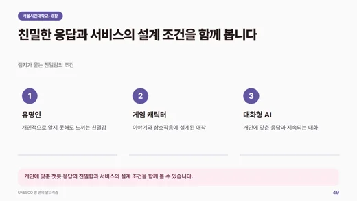
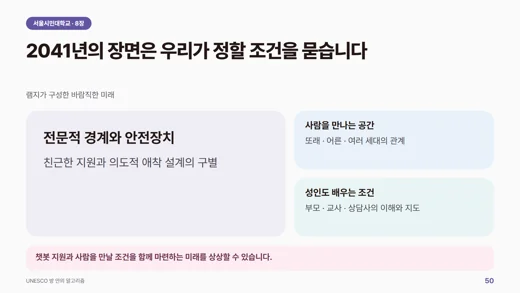
강연 자료 내려받기
PDF는 글꼴 설치 없이 읽을 수 있습니다.